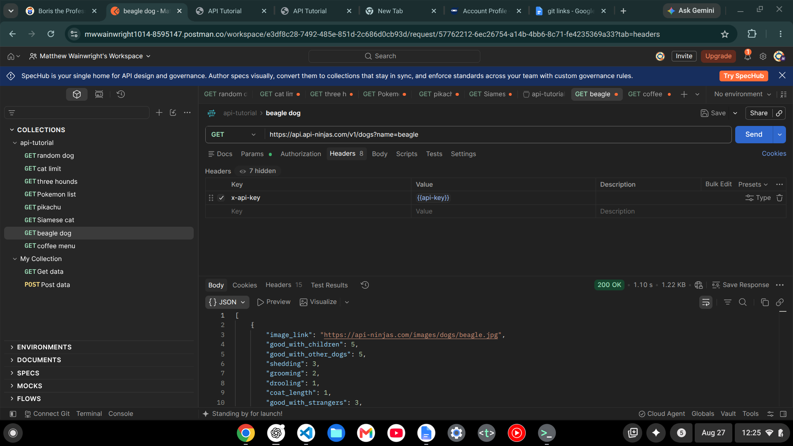

How to Call the Dog CEO API
Step 1 — The URL is the request


What I did: I entered the Dog CEO API URL in my browser. What I saw: The API returned a JSON response with an image URL and a success status.
{
"message": "https://images.dog.ceo/breeds/kelpie/n02105412_5737.jpg",
"status": "success"
}Dot notation reads one property
Today I learned that an object can hold several properties, but dot notation lets me read just the one I want. I used it to pull values like the name, origin, playfulness, and max weight from a cat record.
console.log(pet.name);
console.log(pet.origin);
console.log(pet.playfulness);
console.log(pet.max_weight);A menu that arrived already laid out

What I did: I sent a GET request to the coffee shop menu API in Postman. What I saw: The JSON response already came back formatted on separate lines.
[
{
"name": "Espresso",
"price": 10,
"recipe": [
{ "name": "espresso", "quantity": 30 }
]
},
{
"name": "Espresso Macchiato",
"price": 12,
"recipe": [
{ "name": "espresso", "quantity": 30 },
{ "name": "milk foam", "quantity": 15 }
]
},
{
"name": "Cappuccino",
"price": 19,
"recipe": [
{ "name": "espresso", "quantity": 30 },
{ "name": "steamed milk", "quantity": 20 },
{ "name": "milk foam", "quantity": 50 }
]
},
{
"name": "Mocha",
"price": 8,
"recipe": [
{ "name": "espresso", "quantity": 30 },
{ "name": "chocolate syrup", "quantity": 20 },
{ "name": "steamed milk", "quantity": 25 },
{ "name": "whipped cream", "quantity": 25 }
]
},
{
"name": "Flat White",
"price": 18,
"recipe": [
{ "name": "espresso", "quantity": 30 },
{ "name": "steamed milk", "quantity": 50 }
]
},
{
"name": "Americano",
"price": 7,
"recipe": [
{ "name": "espresso", "quantity": 30 },
{ "name": "water", "quantity": 70 }
]
},
{
"name": "Cafe Latte",
"price": 16,
"recipe": [
{ "name": "espresso", "quantity": 30 },
{ "name": "steamed milk", "quantity": 50 },
{ "name": "milk foam", "quantity": 20 }
]
},
{
"name": "Espresso Con Panna",
"price": 14,
"recipe": [
{ "name": "espresso", "quantity": 30 },
{ "name": "whipped cream", "quantity": 15 }
]
},
{
"name": "Cafe Breve",
"price": 15,
"recipe": [
{ "name": "espresso", "quantity": 25 },
{ "name": "steamed milk", "quantity": 30 },
{ "name": "steamed cream", "quantity": 30 },
{ "name": "milk foam", "quantity": 15 }
]
},
{
"name": "(Discounted) Mocha",
"price": 4,
"discounted": true,
"recipe": [
{ "name": "espresso", "quantity": 30 },
{ "name": "chocolate syrup", "quantity": 20 },
{ "name": "steamed milk", "quantity": 25 },
{ "name": "whipped cream", "quantity": 25 }
]
}
]
Same API key, different endpoint

What I changed: I changed the endpoint from the cats API to the dogs API. What stayed the same: I used the same API key setup in the request header.
[
{
"image_link": "https://api-ninjas.com/images/dogs/beagle.jpg",
"good_with_children": 5,
"good_with_other_dogs": 5,
"shedding": 3,
"grooming": 2,
"drooling": 1,
"coat_length": 1,
"good_with_strangers": 3,
"playfulness": 4,
"protectiveness": 2,
"trainability": 3,
"energy": 4,
"barking": 4,
"min_life_expectancy": 10.0,
"max_life_expectancy": 15.0,
"max_height_male": 16.0,
"max_height_female": 15.0,
"max_weight_male": 20.0,
"max_weight_female": 30.0,
"min_height_male": 14.0,
"min_height_female": 13.0,
"min_weight_male": 15.0,
"min_weight_female": 20.0,
"name": "Beagle"
}
]
An API key can change a failed request into a successful one
Today I learned that some APIs require an API key before they will answer. My request first returned a 400 status code because the key was missing, but adding the key in the request header changed the response to 200 OK.
X-Api-Key: {{api-key}}Changing the endpoint changes the data I get back
I duplicated my cat request and changed the endpoint from /v1/cats to /v1/dogs. The API key setup stayed the same, but the response changed because I was asking the API for a different kind of data.
/v1/cats
/v1/dogs